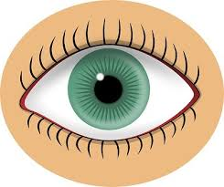
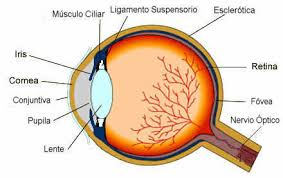
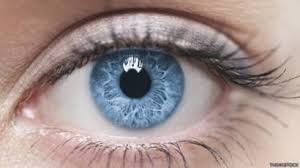

Alumno: Braulio Neftali Sandoval Reyes
Carnet:25-1250-2019
La vista

Los ojos son la ventana del alma
La visualizacion perfecta pero
debemos cuidar y visitar un profesional en la vista


De igual manera la vista enamora